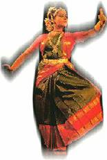

For untold centuries, India has been a veritable treasure-chest of dance and music. Indian mythology is brimming with stories of celestial damsels enchanting even the Rishies with their exquisite histrionic talents. It is said, Devendra, the king of all gods, is entertained in the Indrasabha throughout the night with the loveliest dances by the Apsara beauties - Urvasi, Menaka, Rambha and Thilothama. Throughout the night! Yes! Those heavenly beings know no sleep; their eyes are ever open it seems… and they live eternally!
Mrs. Gauri Menon continues her series on the Classical Dances of India...
In its present form Bharatha Natyam has been known for about two hundred years. While its poses are reminiscent of sculptures dating from the 10th century, the thematic and musical contents were given to it by the musicians of the Tanjore court of the 18th and l9th centuries. It is essentially a solo dance though it is very rarely performed in pairs. A body of technique is developed from the fundamental position of the out-turned thighs, flexed knees and out-turned feet close together. Its chiselled sophistication and stylisation make it a unique form of classical dance. Compositions of Carnatic music provide the repertory.
The unit of movement in footwork is known as Adavu. The dancer has scope to improvise within the rhythmic arrangement of beats known as Thâla. The Orchestra consists of a vocalist, a violinist who accompanies the singer, a Mridangam player, a cymbal player who also recites the pnemonics and a Thambura player who helps to maintain the Sruthi. All members of the orchestra remain seated on one side of the stage.
The programme commences with Alârippu. The word Alârippu means the blossoming of a flower. It is a traditional invocatory dance, a simple form of Nritta danced to rhythmic syllables. Generally it is performed to a Slôka in praise of Ganesha, the remover of all obstacles. The dancer also offers flowers to Lord Nataraja (the dancing Siva) beside the lighted bronze lamp, then seeks blessings from her guru, orchestra and the audience.
Jathiswaram
Jathi is a characteristic pattern of footworks (Adavus). Several intricate patterns of footwork are incorporated within a framework. The dancer executes varied rhythms to the same pattern of musical notes. It may be a single Raga or a Râgamâlika. It has only musical notes (Swaras); it has no Sahitya. Again, like Alârippu, this is just Nritta. Jathiswaram is also known as Swara Pallavi.
Shabdam
Here. Bhâva or Abhinaya, along with Sahitya(verbal) are present. It comes under the group Nritya. Syama Sastri's song "Oh Jagadamba..” in Ânanda Bhairavi is an example. In Shabdam, the dancer praises the deity through Bhâva and Abhinaya.
Varnam
This is the most elaborate and central part of the programme. The dancer has full scope to demonstrate her talents in Bhâva, movements and footwork. Each line of Varnam is followed by the Theermanams, consisting of intricate footwork, hand movements and body bends, ending in fast finales. (Naturally at the end of each Theermanam there is thunderous applause from the audience!).
Like Shabdam, Varnam also comes under the group Nritya and involves Abhinaya. Varnam is very strenuous and generally an hour. In fact, this musical part by itself is a concert and it really is a harmonious feast for eyes and ears! “Sakhiye...” by Ponnaih Pillai is an example.
Padam
This is a sort of musical monologue. The dancer uses all her imagination and creativity in bringing out the beauty of the song. Generally emphasis is on the Bhâva of the Nâyika (heroine) and Nâyaka (hero). It depicts Bhakthi, love or erotic sentiments such as playful deceits. Jayadeva’s Ashtapadi is a good example. The Padams of composer Kshetratnya are very popular, especially the one “Manchi Dinamu.” Swathi Thirunal's padam in Raga Surutti “Alar Sara Parithaapam” is very beautiful.
Javali
This can be considered as a kind of Padam though not so devotional but quite appealing. Iriyamman Thampi's composition in kamboji Raga, "Prâna Nâthan Eniyku Nalkiya…” is a secret Javali.
Thillâna
This final item of the performance is the most exquisite with a number of sculpturesque poses in variegated patterns - it is the very embodiment of grace and elegance. The emphasis is not only on Jathis (footworks) but also on the precision of the technique. This is rightly considered the crowning piece of the programme. Thanom Tha Na Na in Râga Paras by Srinivas Iyengar is an example. Usually at the end of this part, the dancer comes and stands in front of the microphone to say a few words of thanks to her guru, the orchestra and the audience.
Mangalam
Mangalam is a very brief item that ends the programme.
"Its chiselled sophistication and stylisation make Bharatha Nâtyam a unique form of classical dance"
One important feature of Bharatha Natyam is its complete freedom from other influences or impressions. It is pure Nritta (dance in the abstract form) and Nritya (dance with Bhâva or Abhinaya) and adheres strictly to the principles enunciated by Sage Bharatha. Kathak for instance is in reality an amalgam of the dance-drama forms prevalent in the temples of Mathura and Brindavan known as Krishna-Radha leelas and the sophistication of the court traditions of the later Nawabs of Northern India. Bharata Natyam is Lâsya basically and not Thândava, and that explains why it was performed by only women until recently.
Back to Arts & Culture >>